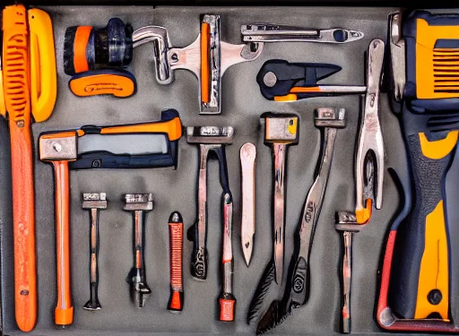

I care a lot about the tools I use. You can see this by looking at how much time I’ve spent on my dotfiles.1 It’s not about being more “productive”. It’s about how it feels to use them. I just can’t help myself but tinker until it feels right.

I also try my best to understand more generally what it is I’m getting from each tool in my toolbox. That gives me good grounds to cut through the hype when new tools come along. To that end, here is a list of requirements I currently hold for the tools I use (kind of) in decreasing order of importance:
Data ownership and privacy. I must own my data. No one else must be able to touch my data without my express permission. Promises, unfortunately, aren’t good enough. I find it incredibly sad that this item rules out many otherwise amazing tools out there.
Speed. There should be minimal lag between action and outcome. The application should never hang unless for a very obviously long-running process. Even then, input and output shouldn’t freeze.
Fuzzy finding. Choosing from a set of commands should always be through an interface that allows me to incrementally narrow the set via fuzzy search. Fuzzy, at the very least, meaning that letters can be left out.
Ideally, there’d be fuzzy finding all the way down to auto-completing single keywords. Though, weirdly enough, I’ve still not found an auto-completion system that satisfies my speed requirement. They all seem to introduce a sub-second input lag that grinds my gears. PyCharm does a great job, but doesn’t satisfy my other requirements.
This is sort of a special case of a more general principle that if there’s a repeated action that the computer could guess with very high accuracy, it should do the work for me. For actions that I perform exceedingly often, I’d bind them to a simple keyboard shortcut. I like VIM’s modal editing because it gives me far more keys to bind.
No visual clutter. There must be an option to disable menu bars, tool bars, icons. Because I prefer keyboard-driven and I have fuzzy finding, I often don’t really need menus/toolbars. In cases where information lends itself well to a visual representation, I prefer it to appear as needed, or if persistent, for it to be compact. For example, a bar displaying open tabs could be a single line of text.
Keyboard-driven. I’m not against the mouse at all. I very happily use it all the time. But between emails, Slack messages, documentation, issue descriptions, code reviews, and good ol’ programming, my work involves tons of writing. And when I’m writing, if there’s even a single action that requires changing my hand position every few minutes, it becomes frustrating really quickly.
Some of the applications I use aren’t fully keyboard-driven. I don’t really mind that when the primary mode of use isn’t typing. For example, creating presentations, managing tasks (I use Things), calendars, Slack and Twitter where I’m reading at least as much as I’m writing, and browsing the web.
Ideally, I should also be able to reconfigure keyboard shortcuts arbitrarily, and for any action. Unfortunately many modern applications fall short here, but there are typically workarounds.
This is a special case of keeping similar actions that occur in similar contexts “close”. If the context is that I’m already typing a bunch, actions should be a keyboard shortcut or fuzzy find away. If the context requires pointing and clicking, then mouse shortcuts, toolbars, and maybe even pie menus are better. For this reason, I’m also not really a fan of keyboard-driven tiling window managers.
Themes. I’m red-green colour-blind, and not all default colour schemes account for this. I’m also a picky about my colour schemes, fonts, and overall theme. I also like switching them up every now and then. Most tools allow this these days.
Footnotes
Caution: They’re not always up-to-date, or easy to understand, and I’ve made no effort to ensure they work for anyone else.↩︎